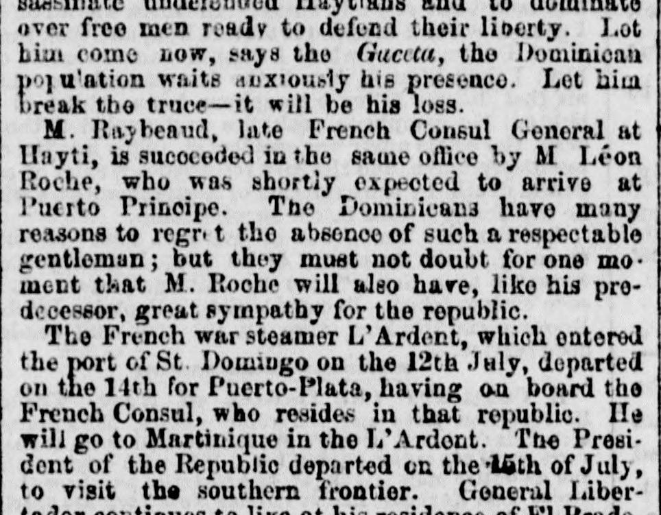

Rnybeaud, late French Consul General at llsiyti, is sucocodod in theRnybeaud, hasta hace poco Cónsul General de Francia en Haití, es sucedido en el
M. Leon Roche has been appointed to succeed M. Raybaud as the French Consul General at Hayti, while the French war steamer L'Ardent departed St. Domingo on July 14 for Puerto-Plata carrying the resident French Consul. Additionally, President Buenaventura Báez issued a decree on June 1 establishing government packet vessels to run between Dominican ports and St. Thomas, and the President departed on July 16 to visit the southern frontier.M. Léon Roche fue designado para relevar a M. Raybaud en el cargo de cónsul general de Francia en Haití, mientras el vapor de guerra francés L'Ardent zarpó de Santo Domingo el 14 de julio hacia Puerto Plata conduciendo al cónsul francés residente. Por lo demás, el presidente Buenaventura Báez dictó un decreto el 1 de junio estableciendo paquebotes gubernamentales que cubriesen la línea entre los puertos dominicanos y Saint Thomas, saliendo el mandatario el 16 de julio en visita de inspección a la frontera meridional.
FULL TEXT:TRADUCCIÓN:
assassinate undefended Haytians and to dominate over free men ready to defend their liberty. Let him come now, says the Gaceta, the Dominican population waits anxiously his presence. Let him break the truce—it will be his loss.sesinar a haitianos indefensos y a dominar sobre hombres libres dispuestos a defender su libertad. Que venga ahora, dice la Gaceta, la población dominicana espera ansiosamente su presencia. Que rompa la tregua —será su pérdida.
M. Raybeaud, late French Consul General at Hayti, is succeeded in the same office by M Léon Roche, who was shortly expected to arrive at Puerto Principe. The Dominicans have many reasons to regret the absence of such a respectable gentleman; but they must not doubt for one moment that M. Roche will also have, like his predecessor, great sympathy for the republic.M. Raybeaud, difunto Cónsul General francés en Haití, es sucedido en el mismo oficio por M. Léon Roche, quien se esperaba que llegara en breve a Puerto Príncipe. Los dominicanos tienen muchas razones para lamentar la ausencia de tan respetable caballero; pero no deben dudar por un momento que M. Roche también tendrá, como su predecesor, gran simpatía por la república.
The French war steamer L'Ardent, which entered the port of St. Domingo on the 12th July, departed on the 14th for Puerto-Plata, having on board the French Consul, who resides in that republic. He will go to Martinique in the L'Ardent. The President of the Republic departed on the 15th of July, to visit the southern frontier. General Libertador continues to live at his residence of El PradoEl vapor de guerra francés L'Ardent, que entró en el puerto de Santo Domingo el 12 de julio, partió el 14 hacia Puerto Plata, teniendo a bordo al Cónsul francés, que reside en esa república. Irá a Martinica en el L'Ardent. El Presidente de la República partió el 15 de julio, a visitar la frontera sur. El general Liber-
The New York Herald. New York [N.Y.], September 1, 1852. Page 3.